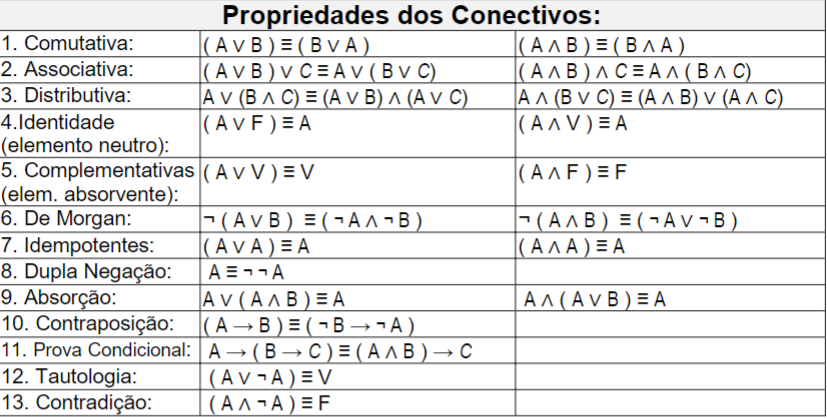

Experiencia criativa
Projeto 1 - Jogo
O primeiro projeto foi a criação de um jogo usando o construct como base. Onde apresentamos o Pixel Explorer, um jogo com visual de pixels clássicos com o objetivo de explorar os planetas e abater os inimigos.
 12.04.07.jpg)
Projeto 2 - Aplicativo Multimídia
O segundo projeto foi de longe o mais complicado usando o processing como base criamos o Backrooms: Escape form the nerdolas, ispirado na temática dos jogos Escape Room criamos um jogo 3D em que o objetivo é escapar dos 'nerdolas' na qual era um imagem de um grupo seleto de alunos da sala de aula que o perseguia com uma musica alta ao fundo. O objetivo do jogo era ficar o maior tempo possivel vivo.
Projeto 3 - Aplicativo web
O terceiro projeto está sendo programar um site com o objetivo de melhor uma cidade do Paraná, a cidade escolhida foi a Lapa (projeto ainda em andamento).
Fundamento de sistema Ciberfísicos
Base numéricas; Binario, Octal, Hexadecimal e Decimal
A base numérica são representações de numeros, cada uma usa um própia base.
Máquina de Turing
Alan TuringFoi um mátematico que criou a 'máquina de Turing' que hoje usamos como base para os computadores, a maquina foi uma fita que lia e escrevia numeros que são restritos de 0 a 1.
Von Neumann
Von Neumann foi um cientista e matemático responsável pela criação da "arquitetura de Von Neumann" que se tornou base em computadores modernos, que resumidamente separou o computador em quatro componentes principais: unidade de processamento central (CPU), memória, dispositivos de entrada e saída e barramentos de comunicação, o que revolucionou a forma como os computadores eram projetados e utilizados.
Memória, Hierarquia e Processadores
Memória é um componente usado para armazenar dados e informações. A hierarquia de memória organiza diferentes tipos de memória para fins de aumentar a capacidade e velocidade de processamento. O processador executa tarefas para o funcionamento da máquina, o clock é a medida que usamos para saber a velocidade de um processador, quanto maior o clack maior sua velocidade de processamento.
Multitasking, Multithreading e Multiprocessing
Multitasking - capacidade do sistema executar varias tarefas simultaneamente. Multithreading - capacidade de um mesmo processo executar varias tarefas simultaneamente, as threads podem ser executadas independentemente, porem compartilha recursos de processo. Multiprocessing - capacidade se um sistema possuir vários núcleos e processadores trabalhando em paralelo
Lógica matemática
Tabela Verdade e Cálculo Proposicional
Um sistema da lógica matemática que representa os príncipios e operações da lógica proposicional.
Manipulação sintática
São princípios que permitem a obtenção de fórmulas proposicionais equivalentes a uma fórmula dada, através da substituição de suas subfórmulas.

Formalismo e Interfêrencia
São princípios que permitem a obtenção de fórmulas proposicionais equivalentes a uma fórmula dada, através da substituição de suas subfórmulas.